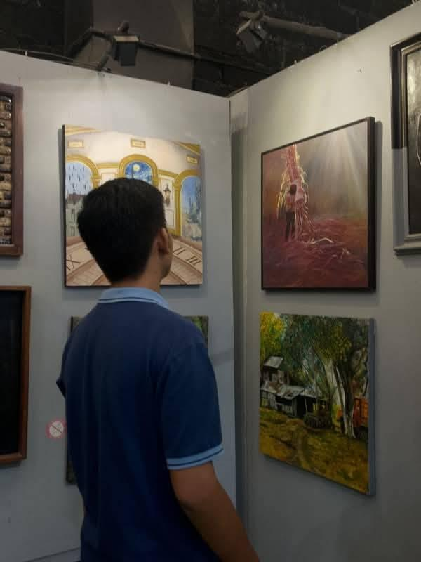

About Myself

Name: Jun Rainer D. Secorin
Birthdate: September 4, 2006
Address: D-4, Mahayahay, Sacol, Buenavista Agusan del Norte
Job: Student
My Childhood
I had a simple and happy childhood filled with fun memories, family bonding, and learning valuable lessons.
My Teenage Life
My teenage years were full of challenges, discoveries, and personal growth that shaped who I am today.
My Adulthood
As an adult, I continue to learn, improve myself, and pursue my goals in life.